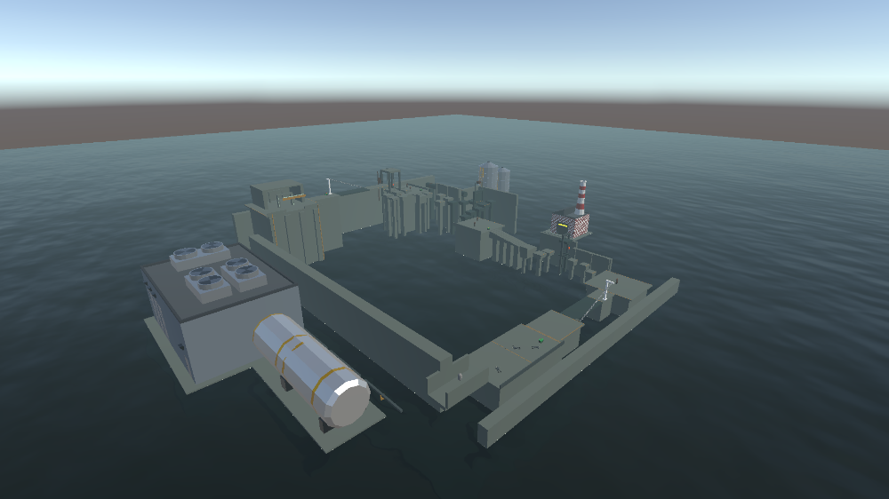
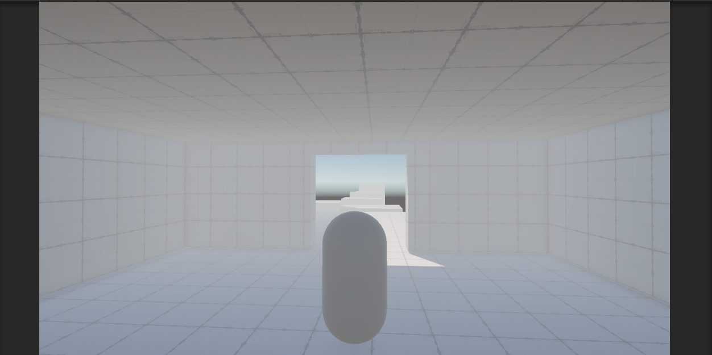
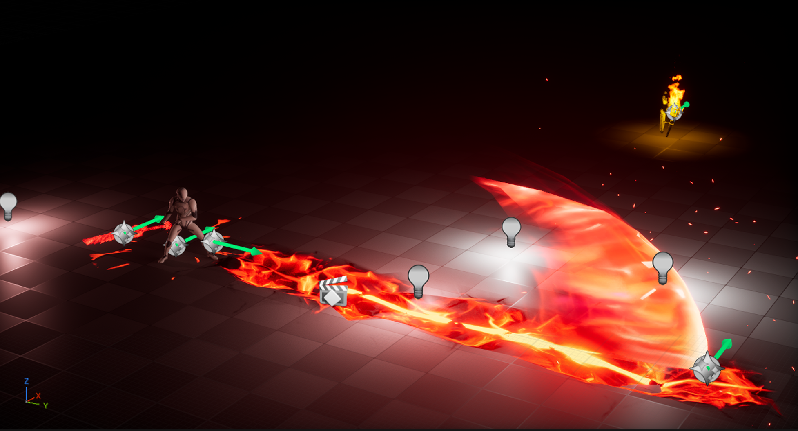
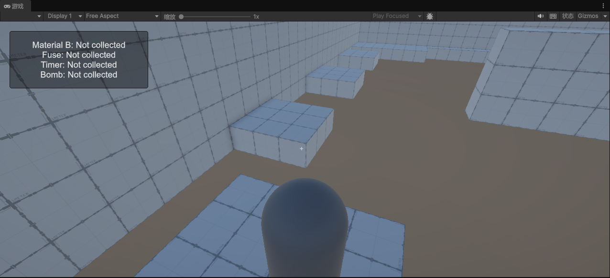

I’m Zihao Shen. I design levels, rules and the moments that make players look again.
Explore my workI’m interested in how players learn through exploration. My work moves between level design, changing game rules, and visual effects that support the experience.

Individual project · Unity
Death changes the way forward.

Team project · Unreal Engine
Giving combat a visual rhythm.
In specific places, dying opens a new route. Switch between the two states to see how the level changes.

I study Game Design at RMIT University. I’m interested in how a level teaches the player what to do, and how its rules change as they progress.
For Last Amber, I learned real-time effects because the team needed them. The case studies separate my own work, AI assistance, and assets made by other creators.
Find me on GitHub